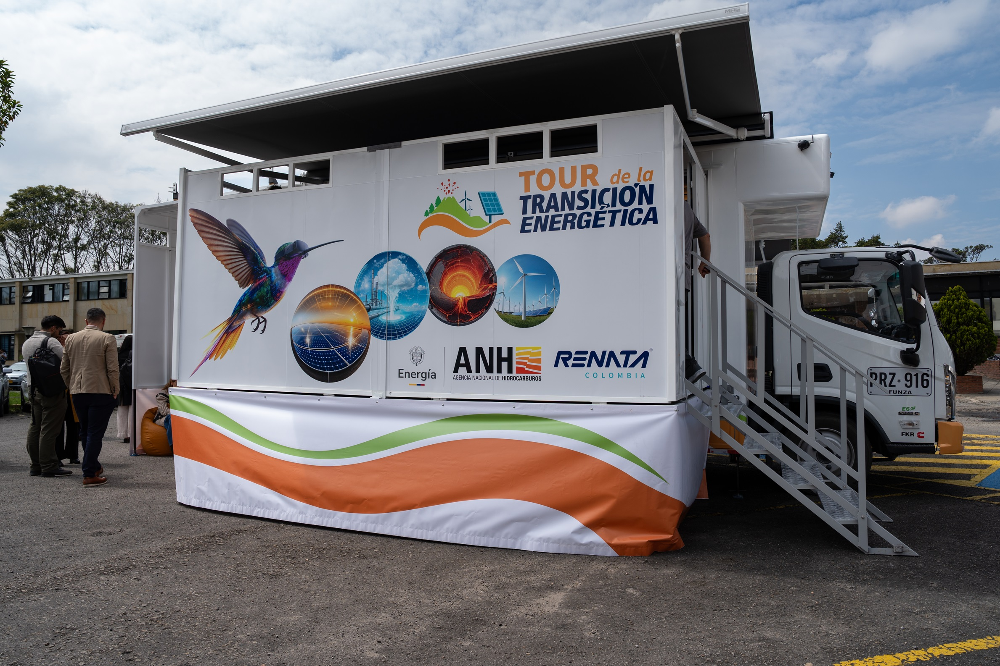

Realidad aumentada institucional / 2025
Transición Energética AR
Serie de cuatro aplicaciones de realidad aumentada para explicar tecnologías de transición energética en Colombia mediante visualización 3D e interacción en tiempo real.

Contexto
Proyecto institucional para RENATA / ANH orientado a comunicar tecnologías de transición energética con visualización 3D e interacción en tiempo real. La referencia pública del SGC presenta el Tour de la Transición Energética como una iniciativa con experiencias inmersivas e interactivas para acercar a la ciudadanía al conocimiento sobre el subsuelo, recursos energéticos y fuentes limpias.
Alcance
Serie de cuatro aplicaciones AR construidas con Unity, C#, AR Foundation y modelos 3D. La noticia pública del SGC menciona el uso de realidad virtual, aumentada y mixta dentro del Centro de Experiencia VE 360.